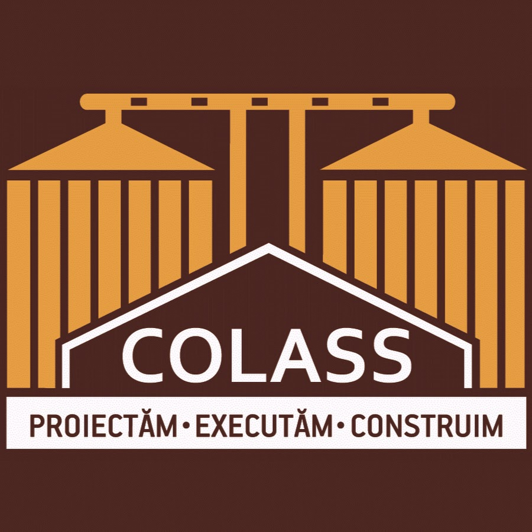
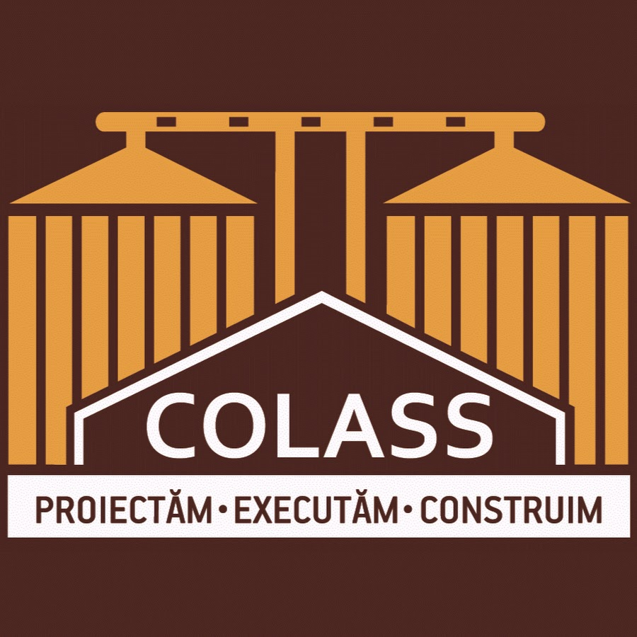
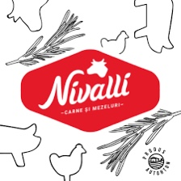
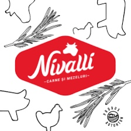
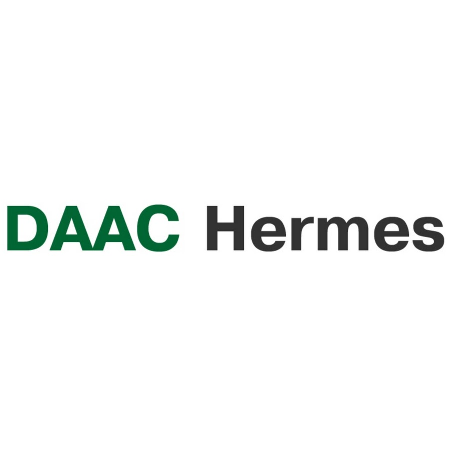
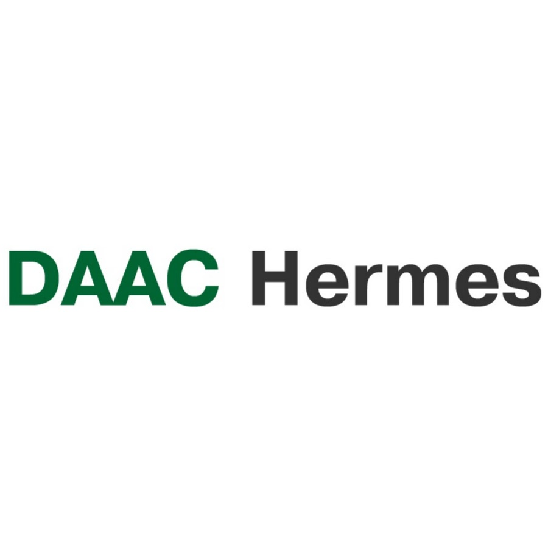

Despre noi
ARTEZIANA.md este o dezvoltare logică a companiei SRL "Vaciano Grup", fondată de un tată și cei 2 fii ai săi pentru a desfășura activități, cărora le-au dedicat întreaga viață, și anume forarea fântânilor arteziene. 45 de ani de cunoștințe și experiență acumulate, concentrate în - ARTEZIANA.md
Forarea fântânilor arteziene
Fără exagerare, suntem liderii în acest domeniu,
cu cel mai flexibil sistem de calcul al costurilor și
selectarea materialelor. Fântânile sunt împărțite în 2
tipuri: industriale și interne. Ele pot avea, de asemenea,
un design diferit în funcție de rocile orizonturilor purtătoare
de apă din care este planificată extragerea apei, și anume: cu
și fără filtru de pietriș.
Tipul 1 - fântâni industriale pentru furnizarea de întreprinderi
mari și obiecte ale complexului agroindustrial, cu un debit de apă
de la 100 la 1000 de tone pe zi.
Tipul 2 - sunt fântâni pentru întreprinderile mici și utilizatorii
privați cu un debit de apă de până la 100 de tone pe zi.
Puteți afla despre proiectele de fântâni din rețelele noastre
sociale sau consultând. 🤝
Amenajarea fântânilor
După ce fântâna este forată, apare o întrebare firească: «ce ar trebui să fac cu ea în continuare?»
În funcție de obiective și obiective, se efectuează următoarele lucrări:
1- construirea unuei fântâni de cheson;
2- instalarea echipamentelor de pompare;
3- efectuarea comunicării;
4- instalarea sistemelor de automatizare;
5- construcția și instalarea rezervoarelor de stocare;
6- instalarea și conectarea stațiilor de pompare suplimentare și a sistemelor lor de automatizare.
Repararea fântânii
O fântână de apă, fiind o structură tehnică complexă,
necesită uneori intervenție tehnică. Cele mai frecvente lucrări
efectuate în timpul reparației:
1- Înlocuirea echipamentului de pompare;
2- Curățarea mecanică a fântânilor abandonate și scăparea de naftalină;
3- Curățarea chimică și prevenirea fântânilor, prin tratarea cu acizi și alcalii;
4- Restaurarea afluenților prin acțiunea unui proiectil hidraulic sau pneumatic;
5- Eliminarea depresurizării carcasei putrezite prin instalarea unei carcase noi în interiorul celei vechi, urmată de cimentarea inelului;
Clienții noștri

 

 



 
